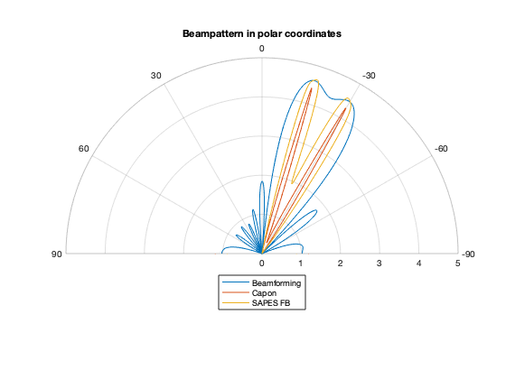
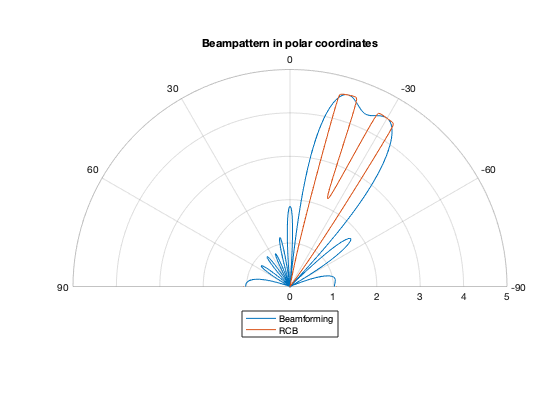
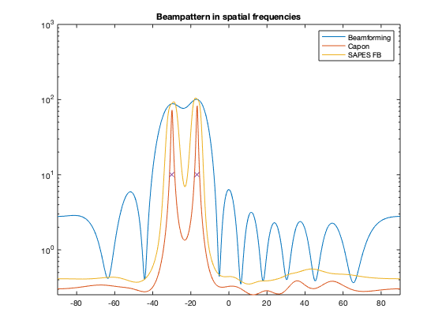
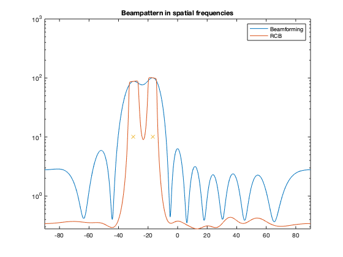
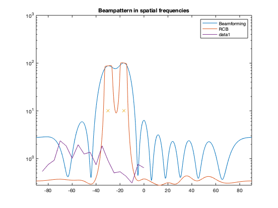
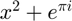

addpath(genpath("../")) % Example of beamforming of coherent and non-coherent sources, with a % calibrated or un-calibrated ULA. % % Try running the code with coherent (cohS) and non-coherent sources; also % try with/without calibration errors (pert). Run it a few times for each % setting to get a feel for how the results vary depending on the % realization. Also try to change the source separation, the number of % sensors, the noise level, the level of perturbation (epsilon_pert), and % the number of measurements. % % By Andreas Jakobsson, 200125 clear; close all; % Settings cohS = 0; % Set this to have coherent sources. pert = 0; % Set this to add calibration errors. N = 64; % Number of measurements m = 10; % Number of sensors c = 2; d = 0.5; % Sensor spacing in wavelengths. Padd = 1024; % Size of the spatial frequency grid. Dtheta = @(theta, c, m) c/(m*abs(cos(theta/180*pi)))*180/pi; theta1 = -30; theta2 = theta1 + Dtheta(theta1, c, m); doaV = [theta1 theta2]; % Angle of arrivals. epsilon_pert = 0.5; % Array perturbation. sigAmp = [ 10 10]; % Source amplitudes noA = length(doaV); % Number of assumed sources. % Generate some spatial data. calStr = 'out'; cohStr = 'non-'; sig = zeros(m,N); tmp = ( randn(1,N) + 1i*randn(1,N) )/sqrt(2); for k=1:length(doaV) A = exp( -pi*1i*sin(doaV(k)*pi/180)'*(0:m-1) ).'; if pert A = A + sqrt(epsilon_pert)*(randn(m,1)+1i*randn(m,1))/sqrt(2); calStr = ''; end if cohS sig = sig + A * sigAmp(k) * tmp * (randn+randn*1i); cohStr = ''; else sig = sig + A * sigAmp(k) * ( randn(1,N) + 1i*randn(1,N) )/sqrt(2); end end n = 2*( randn(m,N) + 1i*randn(m,N) )/sqrt(2); y = sig + n; % Estimate beampattern and DOAs. ff = linspace(-90,90,Padd); phiB = beamform( y, Padd, d )/m/m; doaB = findpeaks(phiB,noA); doaB = sort( ff(doaB) ); phiC = capon_sp( y, Padd, d ); doaC = findpeaks(phiC,noA); doaC = sort( ff(doaC) ); phiA = sapes( y, Padd ); doaA = findpeaks(phiA ,noA); doaA = sort( ff(doaA) ); phiR = rcb( y*y'/N, Padd ); doaR = findpeaks(phiR ,noA); doaR = sort( ff(doaR) ); doaM = sort( root_music_doa( y, noA, d ) )'; doaE = sort( esprit_doa( y, noA, d ) )'; doaW = sort( -MODE( y*y'/N, noA, 1 ) )'*180/pi; ang2idx = @(angle, padd) round((angle+90)/180*(padd-1)); resolved = @(spectrum, angles ,padd) sum(spectrum(ang2idx(angles, padd))) > 2*spectrum(ang2idx(mean(angles),padd)); disp(resolved(phiB,doaV,Padd)) % Plot the resulting spatial spectra. figure pax = polaraxes; polarplot( pax, ff*pi/180, [log(phiB') ; log(phiC') ; log(phiA') ] ) pax.ThetaLim = [-90 90]; pax.ThetaZeroLocation = 'top'; title('Beampattern in polar coordinates') legend('Location', 'southoutside') legend('Beamforming','Capon','SAPES FB')
1
figure pax = polaraxes; polarplot( pax, ff*pi/180, [log(phiB') ; log(phiR') ] ) pax.ThetaLim = [-90 90]; pax.ThetaZeroLocation = 'top'; title('Beampattern in polar coordinates') legend('Location', 'southoutside') legend('Beamforming','RCB') figure vecDoa = NaN*phiB; vecDoa( round((doaV/180+.5)*Padd)+1 ) = sigAmp(1:noA); semilogy( ff, [ abs(phiB) abs(phiC) abs(phiA) ] ); hold on semilogy( ff, vecDoa, 'x' ); hold off axis([-90 90 0 1000]) title('Beampattern in spatial frequencies') legend('Beamforming','Capon','SAPES FB') figure vecDoa = NaN*phiB; vecDoa( round((doaV/180+.5)*Padd)+1 ) = sigAmp(1:noA); semilogy( ff, [ abs(phiB) abs(phiR)] ); hold on semilogy( ff, vecDoa, 'x' ); hold off axis([-90 90 0 1000]) title('Beampattern in spatial frequencies') legend('Beamforming','RCB')  
ang2idx = @(angle, padd) round((angle+90)/180*(padd-1)); resolved = @(spectrum, angles ,padd) sum(spectrum(ang2idx(angles, padd))) > 2*spectrum(ang2idx(mean(angles),padd)); % Present DOA estimates. fprintf('Beamforming of %scoherent sources, with%s calibration errors.\n',cohStr, calStr); fprintf('%s%s\b\b%s\n', 'True DOAs: ', sprintf('%f, ',sort(doaV)), ' '); fprintf('%s%s\b\b%s\n', ' Beamformer: ', sprintf('%f, ',sort(doaB)), ' '); fprintf('%s%s\b\b%s\n', ' Capon: ', sprintf('%f, ',sort(doaC)), ' '); fprintf('%s%s\b\b%s\n', ' SAPES FB: ', sprintf('%f, ',sort(doaA)), ' '); fprintf('%s%s\b\b%s\n', ' RCB: ', sprintf('%f, ',sort(doaR)), ' '); fprintf('%s%s\b\b%s\n', ' MUSIC: ', sprintf('%f, ',sort(doaM)), ' '); fprintf('%s%s\b\b%s\n', ' ESPRIT: ', sprintf('%f, ',sort(doaE)), ' '); fprintf('%s%s\b\b%s\n', ' WSF: ', sprintf('%f, ',sort(doaW)), ' ');
Beamforming of non-coherent sources, without calibration errors. True DOAs: -30.000000, -16.768107 Beamformer: -29.648094, -16.979472 Capon: -29.824047, -16.627566 SAPES FB: -28.944282, -17.507331 RCB: -27.536657, -18.563050 MUSIC: -29.980547, -16.756554 ESPRIT: -29.944425, -16.736126 WSF: -29.979363, -16.753601
c = zeros(18,3); c(:,1) = (-85:5:0)'; i = 1; for theta1 = -85:5:0 cLower = 0.1; % Initial lower bound cUpper = (100+theta1)/10; % Initial upper bound, changes due to index error otherwise while cUpper-cLower > 0.1 % c accuracy limit cMid = mean([cLower, cUpper]); % The c currently in question theta2 = theta1 + Dtheta(theta1, cMid, m); % theta2 depending on this c doaV = [theta1 theta2]; % accurate angles % -v-v- calculate y -v-v- for k=1:length(doaV) A = exp( -pi*1i*sin(doaV(k)*pi/180)'*(0:m-1) ).'; if pert A = A + sqrt(epsilon_pert)*(randn(m,1)+1i*randn(m,1))/sqrt(2); calStr = ''; end if cohS sig = sig + A * sigAmp(k) * tmp * (randn+randn*1i); cohStr = ''; else sig = sig + A * sigAmp(k) * ( randn(1,N) + 1i*randn(1,N) )/sqrt(2); end end n = 2*( randn(m,N) + 1i*randn(m,N) )/sqrt(2); y = sig + n; % -^-^- calculate y -^-^- phiB = beamform( y, Padd, d )/m/m; %phiC = capon_sp( y, Padd, d ); % capon method % change limits if resolved(phiB, doaV, Padd) cUpper = cMid; else cLower = cMid; end end c(i,2) = cMid; c(i,3) = theta2; i = i+1; end hold on plot(c(:,1),c(:,2)) % yyaxis right % hold on % plot(c(:,1),c(:,3))
